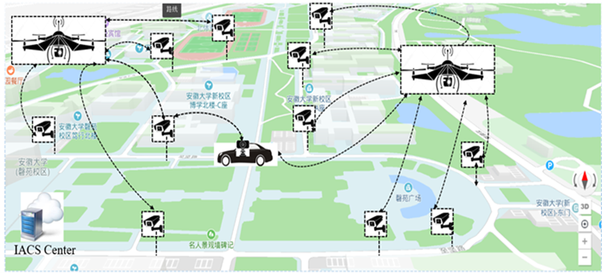
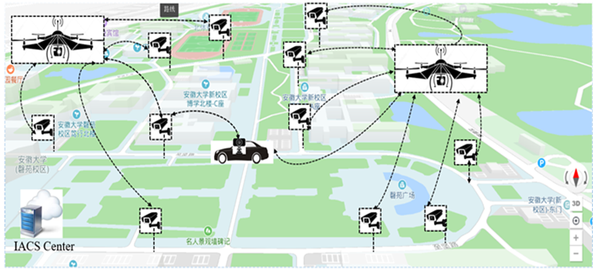

机载边缘计算研究方向
 

本研究方向专注于无人机集群技术在灾难应急调度中的应用，通过多架无人机协同执行任务，实现灾害现场的实时监控、信息采集和指挥调度。实验室研发的系统利用先进算法和通信技术，能够快速识别灾区重点目标，并与地面无人车协同作战，构建陆空一体化救援平台。在大范围灾难区域，该平台可实时调配资源，精准检索和跟踪目标，为救援决策提供科学依据。本研究方向持续为灾难救援提供全方位的智能保障，助力提升应急响应效率，最大限度减少人员伤亡。
在边缘计算系统结构方面，设计一套基于异构计算架构边缘智能摄像机、一套分布式边缘计算的通感算一体化融合系统。成果发表在：
CCF A类期刊 Proceedings of IEEE（中科院JCR一区）
CCF A类期刊 IEEE Transactions on Services Computing
CCFB类期刊IEEE Transactions on Vehicular Technology
中科院JCR一区IEEE Internet of Things以及若干其他EI会议和SCI期刊等